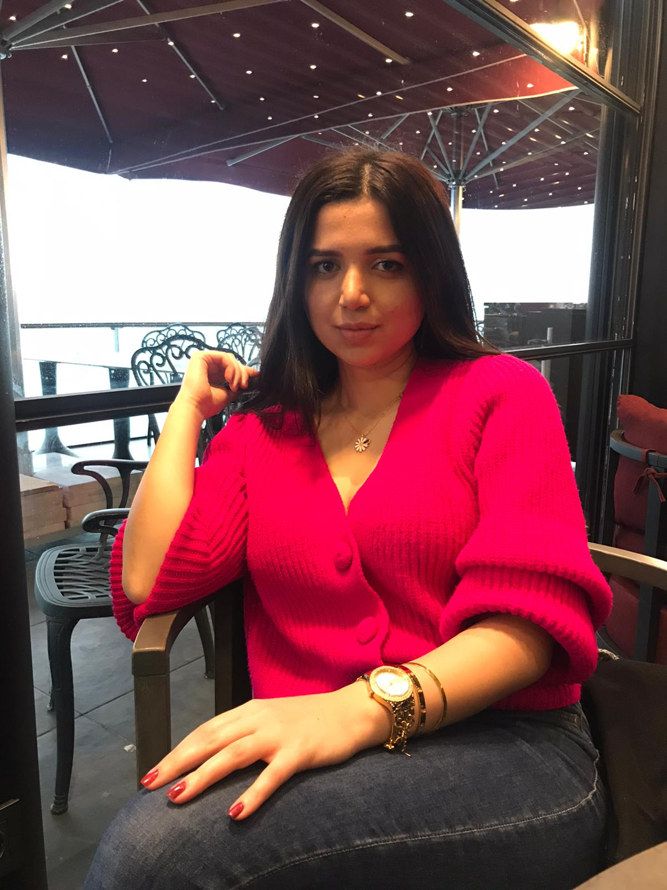

Ben Belgin Aydemir 21 yaşındayım.2017 yılında Özel Çözüm Temel Lisesi'nde mezun oldum.2017 yılında İstanbul Gelişim Üniversitesini Bilgisayar Mühendisliği bölümünü %75 bursla kazandım.Üniversite son sınıf öğrencisiyim.İlgi alanlarım yüzmek,koşmak ve kitap okumak.Araştırmayı ve kendime yenilik katmayı çok seviyorum.Şu anda veri bilimi yapay zeka alanında ilerlemekteyim.C,C#,Python,Html,Css,MSSQL Server ve MySQL üzerinde yoğunlaştım ve projeler gerçekleştirdim.İlk stajımda arduino ve php üzerinde üzerinde proje geliştirdim. Son stajımda ise Mvc5 ile C# tabanlı Kütüphane otomasyonu gerçekleştirdim.
Benim Hikayem
